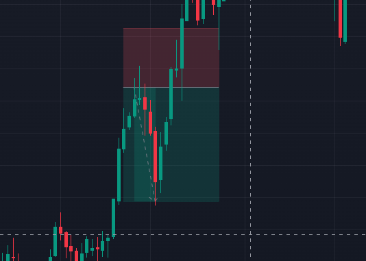

Risk Management
Risk management is a crucial aspect of forex trading. It involves identifying, assessing, and prioritizing risks followed by coordinated and economical application of resources to minimize, monitor, and control the probability or impact of unfortunate events. Effective risk management ensures that traders can survive the long-term fluctuations of the forex market and achieve consistent profitability.
Why Risk Management is Important
- Capital Preservation: The primary goal of risk management is to protect your trading capital. By minimizing losses, you ensure that you have sufficient funds to continue trading and capitalize on profitable opportunities.
- Emotional Control: Effective risk management helps traders maintain emotional stability. Large, unexpected losses can lead to emotional trading decisions, which often result in further losses.
- Consistent Performance: Managing risk allows traders to achieve more consistent performance over time. Rather than experiencing extreme highs and lows, traders can aim for steady, manageable growth.
- Avoiding Catastrophic Losses: Risk management strategies are designed to prevent catastrophic losses that could wipe out your trading account. By setting appropriate stop-loss levels and position sizes, traders can limit the impact of adverse market movements.
Key Concepts in Risk Management
Risk/Reward Ratio:
The risk/reward ratio is a measure used to compare the potential profit of a trade to its potential loss. A favorable risk/reward ratio ensures that even if a trader experiences several losing trades, the winning trades will offset these losses and generate an overall profit.
Example: If a trader is willing to risk $100 to potentially make $300, the risk/reward ratio is 1:3.
Position Sizing:
Position sizing refers to determining the number of units or lots to trade based on the size of your trading account and the level of risk you are willing to take. Proper position sizing ensures that no single trade can have a disproportionately large impact on your trading account.
Example: A trader with a $10,000 account who is willing to risk 1% per trade would risk $100 per trade. If the stop-loss for a trade is 50 pips, the trader would trade 2 mini lots (1 mini lot = $1 per pip).

Stop-Loss and Take-Profit Orders
Stop-Loss Orders
A stop-loss order automatically closes a trade when the price reaches a predetermined level, limiting the trader's loss on that position. Setting a stop-loss is a fundamental part of risk management as it prevents losses from becoming unmanageable.
Example: If a trader sells CHF/JPY at 178.270 and sets a stop-loss at 180.661, the maximum loss on the trade would be 239 pips.

Take-Profit Orders
A take-profit order automatically closes a trade when the price reaches a predetermined profit level. This ensures that profits are realized before the market can reverse.
Example: If a trader sells CHF/JPY at 178.264 and sets a take-profit at 176.837, the trade will close with a 142-pip profit once the price reaches that level.